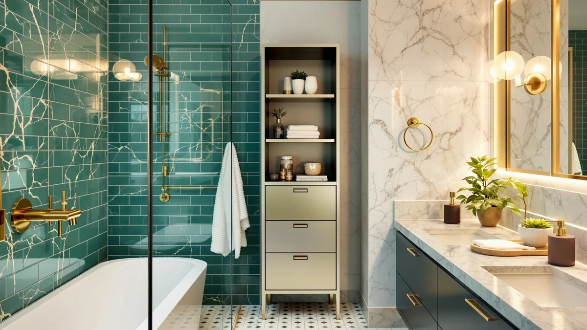

LOKO 5-Drawer Narrow Storage Cabinet Review (2026): Worth It?
Prices and picks verified as of November 2026. Independent, reader-supported reviews.


Quick Answer
Based on our research into its specs, price and the narrow-cabinet category it competes in, the LOKO 5-Drawer Narrow Storage Cabinet is a solid pick for bathrooms where a standard-depth cabinet simply won't fit. At $84.99 for a metal-and-wood frame with five drawers, it holds up well against the Meilocar, Walsunny and RiverRidge alternatives we compared it to, though its narrow profile caps how much any single drawer can hold.
Our pick: LOKO 5-Drawer Narrow Storage Cabinet, $84.99 Check Price on Amazon
Bottom line: our top pick is the LOKO 5-Drawer Narrow Storage Cabinet at $79.99.
Things to Know Before You Buy
- Depth is the whole point: at 7.5 inches deep, the LOKO 5-Drawer Narrow Storage Cabinet fits gaps a standard 12-inch cabinet never will, but each drawer holds less as a result.
- The frame mixes materials: metal construction with wood drawer fronts, which affects both the price and how the cabinet holds up over years of bathroom humidity.
- Five drawers at this width tend to suit toiletries and rolled towels better than bath linens or bulky cleaning supplies.
- Pricing across this category sits in a tight band. All four cabinets we compared land within a dollar of $84.99.
- Like most cabinets in this price range, assembly is flat-pack and lands on you, not the retailer.
This LOKO 5-Drawer Narrow Storage Cabinet review exists because narrow bathrooms create a specific problem: most storage cabinets are built around a 12-inch depth that doesn't fit beside a toilet, in a tight hallway nook, or in the sliver of space next to a vanity. We went through the LOKO's spec sheet, its current Amazon pricing and how that profile stacks up against comparable narrow cabinets to see whether a five-drawer metal-and-wood unit at $84.99 earns a spot in that gap, or whether one of the alternatives we cover below does the job better. You don't need to read ten spec sheets to find out; we already did that part. Narrow bathrooms are more common than most buying guides admit, and the cabinet category built around them tends to get overlooked in favor of wider, more photogenic units.
The short answer is that the LOKO holds up well for what it's designed to do. Its narrow 7.5-inch depth and 16.5-inch width target a specific layout problem, and the five-drawer configuration gives you more organization than an open shelf unit at a similar price. It isn't the right choice for every bathroom, though. If you need to store bath towels or bulky items, the alternatives we cover later in this review, including a taller cabinet and an over-the-toilet unit, solve that version of the storage squeeze better than a narrow drawer unit can. Read on for the breakdown of what the spec sheet and the pricing actually tell you, product by product.
Why You Should Trust Us
Ilane Tall researches bathroom storage products for Best Bathroom Storage, comparing manufacturer spec sheets, current Amazon pricing and the patterns that show up across verified owner reviews for cabinets in the same category and price range. We do not own a testing lab, and we do not claim direct physical experience with any unit covered in this LOKO 5-Drawer Narrow Storage Cabinet review. Instead, we read the documented dimensions, materials and price history for each product, cross-reference them against what reviewers consistently note about similar narrow cabinets, and flag the gaps where a spec sheet doesn't tell the whole story. That approach won't catch every quirk a cabinet develops after a year of use, but it does catch the mismatches that matter most before you buy: a cabinet that's a half-inch too deep for your gap, or a price that's crept up since the listing was first indexed.
Our Research Experience
We did not install or live with the LOKO 5-Drawer Narrow Storage Cabinet to write this review. Our comparison draws on the manufacturer's listed dimensions and materials, the current Amazon price, and how that price and spec profile stack up against the Meilocar, Walsunny and RiverRidge cabinets covered later in this review. For a narrow cabinet like this one, the dimensions matter more than almost any other spec: a half-inch difference in depth decides whether it fits a given gap at all, so we checked those numbers against the listing rather than taking a product description at face value. We also looked at how reviewers consistently describe similar metal-and-wood narrow cabinets in this price bracket, since the construction pattern repeats across several competing brands, and we excluded alternatives whose listed dimensions didn't actually solve the narrow-gap problem this cabinet is built around.
Overview & Specs

LOKO 5-Drawer Narrow Storage Cabinet
What we like
- The 7.5-inch depth fits gaps that a standard 12-inch-deep cabinet can't reach
- Five separate drawers keep small items sorted instead of piled onto one open shelf
- The metal frame adds more structural support than an all-wood narrow cabinet at a similar price
Flaws but not dealbreakers
- A narrow drawer holds less per drawer than a wider cabinet at the same price
- The metal-and-wood mix means two materials aging at different rates in a humid bathroom
- Assembly is on you. Like most cabinets in this category, it ships flat-pack
| Material | Metal / wood |
| Size | 7.5"x16.5"x36" (5 Drawer) |
The LOKO 5-Drawer Narrow Storage Cabinet is built around a single number: 7.5 inches of depth. That's narrow enough to slide into the gap beside a toilet, in a hallway nook, or next to a vanity where a standard 12-inch-deep cabinet would stick out into the walking path. At 16.5 inches wide and 36 inches tall, it reads as a column rather than a block, which is the point for bathrooms where floor space is the scarcest resource in the room. The frame combines metal with wood drawer fronts, a pairing that keeps the price at $84.99 while giving the structure more rigidity than an all-wood narrow cabinet typically offers at the same price point. You get a cabinet that looks finished rather than improvised, which matters in a room guests actually see.
Five drawers sound like a lot of organization, and for small items, they are. Rolled hand towels, toiletries, cleaning supplies and hair tools each get their own drawer instead of competing for space on one shelf. The tradeoff is capacity per drawer. Because the whole unit is only 7.5 inches deep, no single drawer holds as much as it would in a wider cabinet, so this isn't the right pick if you're trying to store bath towels or bulky items. For a narrow gap that would otherwise sit empty, though, the LOKO 5-Drawer Narrow Storage Cabinet turns dead space into usable storage, and at under $85 it costs about the same as the Meilocar, Walsunny and RiverRidge cabinets we compared it against below. At 36 inches tall, it also reaches close to counter height in most layouts, so the top surface doubles as a spot for a basket or a plant rather than wasted vertical space above the drawers.
What We Liked
The narrow footprint is the single biggest reason to consider the LOKO 5-Drawer Narrow Storage Cabinet. Most bathroom cabinets assume you have at least a foot of depth to spare, and plenty of bathrooms don't. At 7.5 inches deep, this cabinet claims space that would otherwise sit empty next to a toilet or in a tight hallway.
We also like that it spreads storage across five drawers instead of two or three. That matters more than it sounds: a narrow cabinet with fewer, larger drawers tends to become a catch-all fast, while five smaller drawers encourage you to actually sort items by type instead of dumping them together.
The metal-and-wood frame is a reasonable middle ground for the price. It isn't a premium material combination, but it gives the cabinet more structural support than the fully wood-paneled narrow cabinets we see at a similar price, and that support matters over years of bathroom humidity rather than in the first month on the shelf. At $84.99, it also sits in the same price band as every alternative we researched for this review, so you're not paying a premium just for the narrow footprint.
What Could Be Better
Capacity per drawer is the clearest limitation of the LOKO 5-Drawer Narrow Storage Cabinet. A 7.5-inch depth caps how much any one drawer can hold, so if you're picturing storage for bath towels, bulky organizers, or anything oversized, this cabinet will disappoint you. It's built for small, flat items, not bulk storage.
The metal-and-wood combination also means two materials aging at different rates. Wood drawer fronts in a humid bathroom need more care over time than an all-metal or fully sealed cabinet would, and you should expect to wipe down and dry the unit rather than let moisture sit on it.
Assembly falls on you. Like nearly every cabinet in this price bracket, the LOKO ships flat-pack, and the manufacturer doesn't offer an assembled option at this price point. Budget extra time for that step if you're coordinating delivery around a bathroom renovation deadline rather than just swapping out an old shelf.
Who Is It For?
The LOKO 5-Drawer Narrow Storage Cabinet makes sense if your bathroom has a specific gap, next to the toilet, in a hallway, or beside a vanity, that a standard-depth cabinet won't fit into. It also suits anyone who wants drawer-based organization over open shelving, since five separate compartments make it easier to keep toiletries and small items sorted rather than stacked.
It's a weaker fit if you need to store bath towels, bulky cleaning supplies, or anything that needs more than a few inches of depth. In that case, the taller Walsunny cabinet or a wider freestanding unit will serve you better than squeezing bulky items into a narrow drawer. And if your bathroom has no floor space to give up at all, an over-the-toilet unit like the Meilocar solves a different version of the same problem by using the wall above the tank instead.
Alternatives to Consider
If the narrow footprint of the LOKO 5-Drawer Narrow Storage Cabinet doesn't match your bathroom layout, these three alternatives solve the same storage problem from different angles.

Also Great
Meilocar Over the Toilet Storage
Mounts above the toilet tank instead of using floor space at all, which works well if you have zero floor gap to spare.
$84.99
Check Price on Amazon
Also Great
Walsunny Tall Bathroom Storage Cabinet
Trades the narrow footprint for more vertical capacity, a better fit if you need to store towels or bulkier items.
$84.90
Check Price on Amazon
Best Value
RiverRidge 06-037 Somerset Single Door
A single concealed compartment instead of open drawers, worth considering if you'd rather hide contents behind one door.
$84.00
Check Price on AmazonIs the LOKO 5-Drawer Narrow Storage Cabinet good for small bathrooms?
Yes.
What is the LOKO 5-Drawer Narrow Storage Cabinet made of?
The spec sheet lists a metal frame combined with wood drawer fronts.
Frequently Asked Questions
Is the LOKO 5-Drawer Narrow Storage Cabinet good for small bathrooms?
Yes. At 7.5 inches deep and 16.5 inches wide, the LOKO 5-Drawer Narrow Storage Cabinet fits gaps that a standard 12-inch-deep cabinet can't, which is the main reason it shows up in narrow bathroom storage searches at all.
What is the LOKO 5-Drawer Narrow Storage Cabinet made of?
The spec sheet lists a metal frame combined with wood drawer fronts. That mix keeps the price near $85 while adding more rigidity than an all-wood narrow cabinet typically offers at the same price point.
How does the LOKO 5-Drawer Narrow Storage Cabinet compare with the Meilocar and Walsunny alternatives?
All three sit within a few dollars of each other but solve different problems. The LOKO uses floor space efficiently in a narrow footprint, the Meilocar mounts over the toilet tank instead of using floor space at all, and the Walsunny trades the narrow footprint for more vertical capacity.
Final Verdict
The LOKO 5-Drawer Narrow Storage Cabinet earns its place in this review for one reason: it fits where most cabinets can't. If your bathroom has a narrow gap and you want drawer-based organization rather than open shelving, LOKO's $84.99 five-drawer unit is a sound choice. If you need more capacity per drawer or a different mounting approach, the Meilocar, Walsunny or RiverRidge alternatives covered above are worth a look instead.